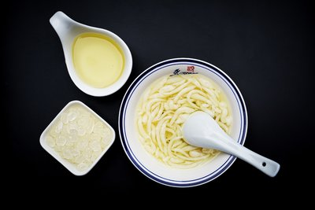

|  |
凉虾
- 凉虾产自湖北宜昌，在宜昌十分常见，是颇具特色的一种小吃，滑糯清爽，柔软香甜，最好是使用宜昌本地的石灰岩石灰来制作。
- 街头的正宗做法，是用澄清的石灰水来调糯米粉，其中还要加一些大米粉，这样吃起来口感更爽口。为什么呢，因为要制成凉虾必须要使用一定量的石灰水，自古以来宜昌产特有的石灰岩，这种石灰岩制成的米凉虾，才叫凉虾，所以凉虾在宜昌（古称夷陵）才可能做的出来。
- 自家做时，撒点红红绿绿的蜜饯丝，炒过的芝麻、花生粒，或用桂花糖水代替红糖水，就更有味道了。还有人用黑米或玉米入料，很有创意！
用大米制浆煮熟，用漏勺漏入凉水盆中而成。因头大尾细形似虾，故此得名。用它配入红糖（冰糖）水，是夏季解渴佳品，香甜软嫩，入口冰凉。
|